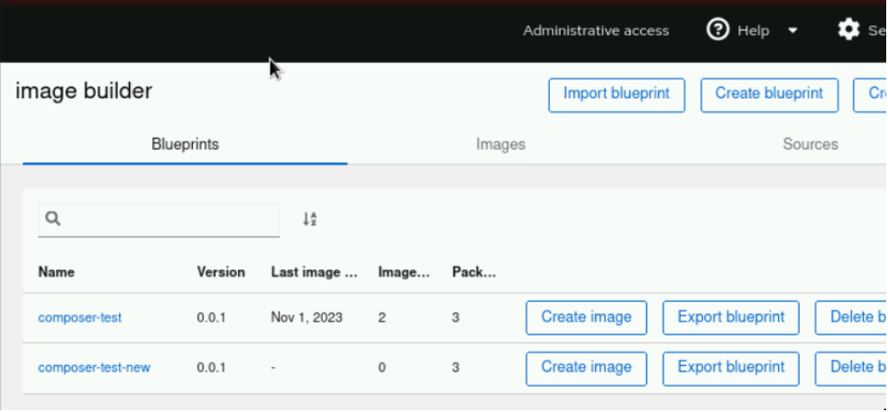
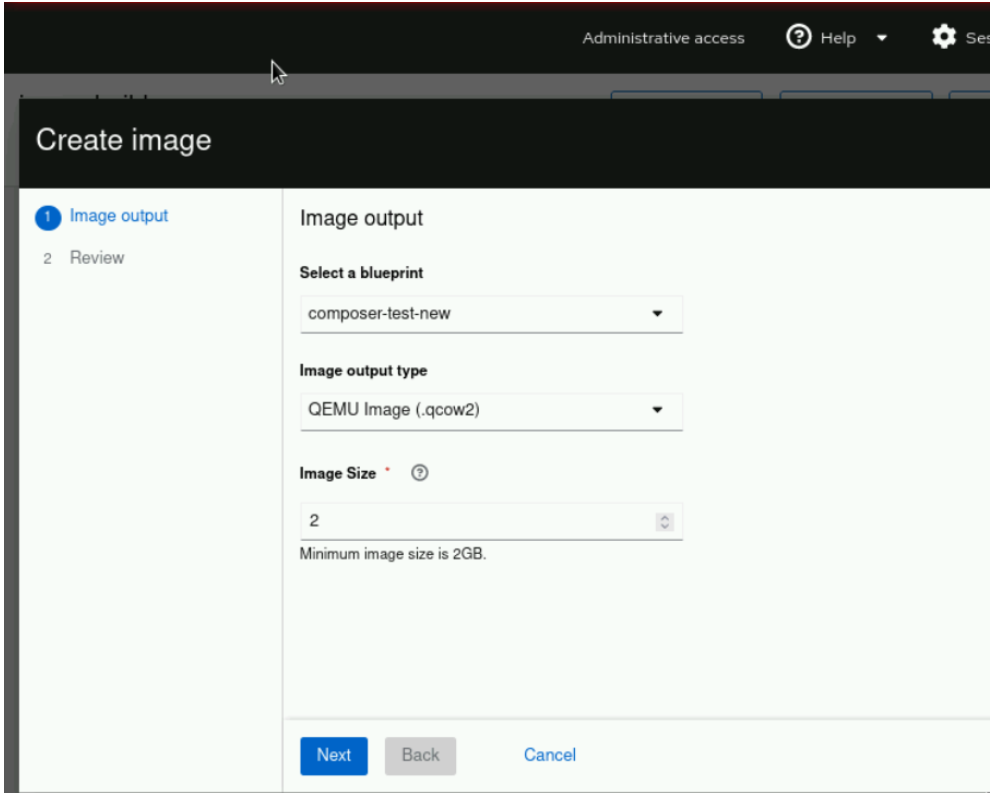
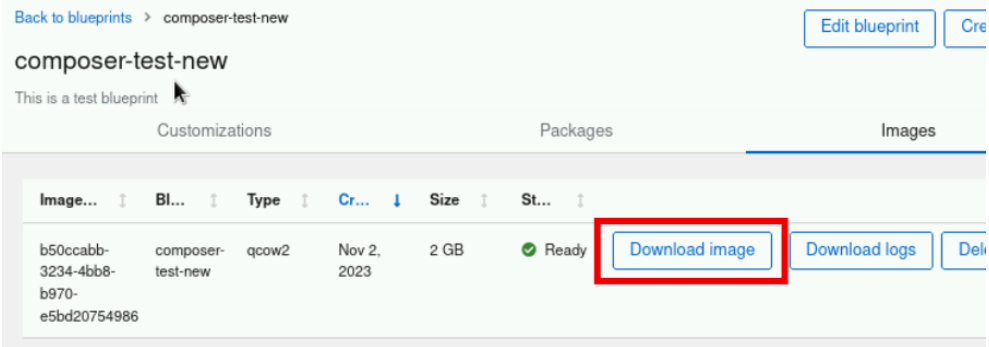
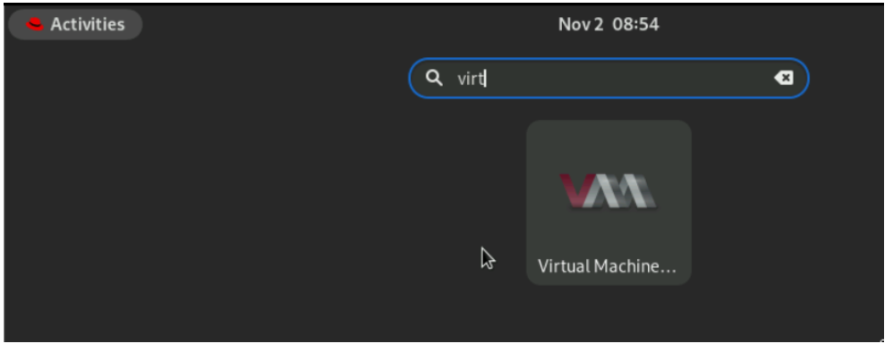
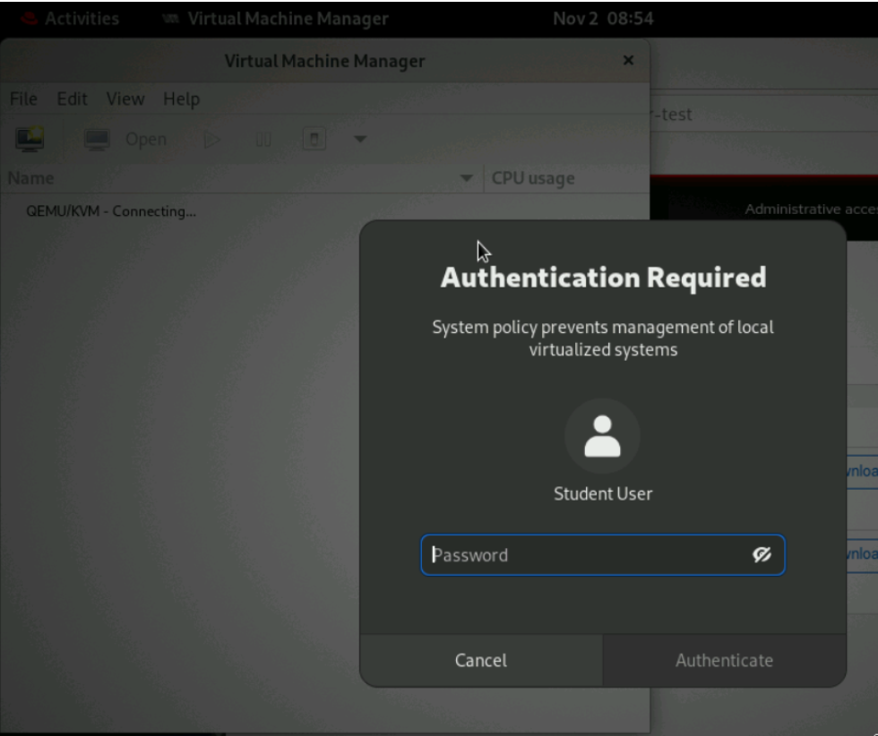
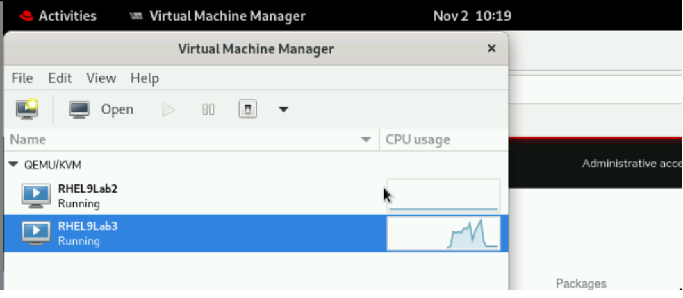
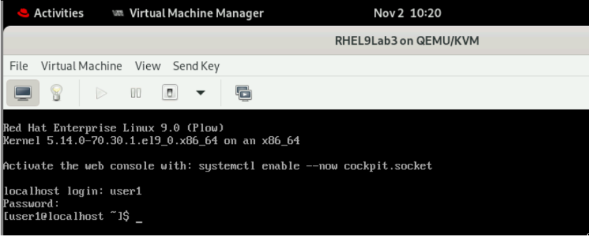

Guided Exercise: Customize a blueprint for post-installation tasks
Customize a blueprint by using the web console for post-installation tasks like adding users and SSH keys.
Outcomes
-
Customize a blueprint by using the web console for post-installation tasks like adding users and SSH keys.
-
Save the
composer-testblueprint using the composer-cli command. -
Configure a new user
user1with passwordredhat, and belongs to thewheelandusersgroups. -
Configure an SSH key for the root user.
-
Push the modified composer-test blueprint, and confirm that your changes are applied.
-
Use the RHEL web console to create a QEMU qcow2 Image (
.qcow2) using the customized blueprint.
-
The resulting image build should have user1 with sudo access (because of the wheel group), and it allows SSH for the root user with the correct key authentication.
Instructions
-
Save a copy of the
composer-testblueprint and copy it to a new file before customizing it.-
Open a terminal to the workstation machine.
-
Use this command to save a copy of the blueprint configuration file.
[student@workstation ~]$ composer-cli blueprints save composer-test
-
The file itself is in the TOML format (.toml) and can be edited in any text editor.
[student@workstation ~]$ ls composer-test.toml ...
Note: The name of the TOML file does not matter, it is optional that you rename the file to match the blueprint name.
-
-
Copy the file to the name
composer-test-new.toml.[student@workstation ~]$ cp composer-test.toml composer-test-new.toml
-
-
Edit the file
composer-test-new.tomlin a local text editor to customize the blueprint.-
Change the blueprint name (the name field) to "composer-test-new".
name = "composer-test-new" ...output omitted...
-
Add an SSH key for the root user. Use the key shown in this file excerpt.
[[customizations.sshkey]] user = "root" key = "ssh-rsa AAAAB3NzaC1yc2EAAAADAQABAAABAQDGtUW3ismHyuCW4CDdTVOOOq6aySdtYenXFWWx7HJa4VTepkG00aaLId9ocra10hc+MB0GTJMCyabDv3i8NKdi6GDH/aOLVsp/Ewy8DEzZMBlJDCt4v2i4/wU4liw6KgEFkZs+5hnqU8d4QzldyGJ5onr+AGvFOKG68CS0BBl40Z1twf1HhCyx8k6nzD2ovlkxWRFZKPAFrtPCBVvQDkOfVFZF+lwzaSztgAjbFZ4A9jqQyUYx4kOJ5DtRef36ucdUdVQale0+8lICl7/gb142SPpYfhxe88/BJScLPRjvVNeu1TxRmoHtVazqnAoRxQYAn2MoI6AG+w6QuZf8f7aL LabGradingKey"
Note: If you try to copy/paste from here and meet an error, copy the SSH key from the contents of the file /home/student/.ssh/lab_rsa.pub on the workstation machine.
-
Generate an encrypted password string for the password redhat (enter redhat when prompted).
[student@workstation ~]$ python3 -c "import crypt, getpass; print(crypt.crypt(getpass.getpass(), crypt.METHOD_SHA512))" Password: $6$.......
-
The value of the encrypted string in the preceding output is different on your system.
-
Copy the encrypted password string you generated. You use it in the next step for the value of the
password =field in thecustomizations.user section.
-
-
Add a new user to the blueprint by adding the following section to the file.
-
This section adds the user
user1with the passwordredhat. -
Paste the copied encrypted password string value from the previous step in the password field within double quotes.
-
In the key field, use the SSH key you used for the
rootuser in a previous step. -
The user uses the public key of the student user and is part of groups
usersandwheel.[[customizations.user]] name = "user1" password = "<encrypted password string copied from previous step>" key = "<public SSH key for student user>" shell = "/usr/bin/bash" groups = ["users", "wheel"] uid = 1001
-
-
-
Save and close the file after you make the changes.
-
Push this new configuration to image builder:
[student@workstation ~]$ composer-cli blueprints push composer-test-new.toml
-
Refresh the RHEL web console and return to the
Image Builderpage. Verify that the new blueprintcomposite-test-newis visible. -
Create a
qemu2image for thecomposer-test-newblueprint.-
Click
Create imagebutton for thecomposer-test-newblueprint. -
Select the Image output type as QEMU image (
.qcow2) and then click Next. -
Click Create.
-
-
Wait for about 5 minutes for the image creation to complete. Check the status from the command line.
[student@workstation hol001]$ composer-cli compose list ID Status Blueprint Version Type b50ccabb-3234-4bb8-b970-e5bd20754986 FINISHED composer-test-new 0.0.1 qcow2 58ad5f0e-870e-482f-882d-3a727d3185fc FINISHED composer-test 0.0.0 tar f24ce6c2-beba-41e6-b5e4-783bfdeeec70 FINISHED composer-test 0.0.1 qcow2
-
Install the
libguestfs-tools-cpackage as the grading script requires it to evalute your work. Enter the sudo passwordstudentwhen prompted.[student@workstation ~]$ sudo dnf install -y libguestfs-tools-c [sudo] password for student:
-
Run the grading script to verify your work.
[student@workstation ~]$ lab grade imagebuilder-customize Grading lab. SUCCESS Checking lab systems ...output omitted... Overall lab grade: PASS
Note: If you run the script too early, the script fails as the image creation is not complete.
-
Optionally, download and test the image on the
workstationmachine.-
Click Download image for the image created from the composer-test-new blueprint to download the image.
-
Select Save File and then click OK.
-
-
In a previous exercise you configured the workstation machine to run virtual machines. If you have not configured it, then configure it by following the steps in the previous exercise.
-
Verify that the image is downloaded.
[student@workstation hol001]$ ls ~/Downloads/ b50ccabb-3234-4bb8-b970-e5bd20754986-disk.qcow2 d7c11834-cc76-474d-9ace-68a071cf89ff-disk.qcow2
-
The file names in the preceding output are different on your system.
-
-
Copy the image to the default storage pool. Make sure to copy the correct file (the latest one).
[student@workstation ~]$ sudo cp /home/student/Downloads/b50ccabb-3234-4bb8-b970-e5bd20754986-disk.qcow2 /var/lib/libvirt/images/ [sudo] password for student:
-
The file name in the preceding output is different on your system.
-
-
Test the image using the following command. The commands creates a virtual machine with the name RHEL9Lab2.
[student@workstation ~]$ sudo virt-install --name RHEL9Lab3 --memory 2048 --vcpus 2 --os-variant rhel9.0 --import --disk /var/lib/libvirt/images/b50ccabb-3234-4bb8-b970-e5bd20754986-disk.qcow2 ...output omitted... Starting install... Creating domain... Domain is still running. Installation may be in progress. Waiting for the installation to complete.
-
You can use
ctrl+cto quit out of the running command.
-
-
On the
workstationGUI, search for Virtual Machine Manager.-
Open the Virtual Machine Manager application. Enter the student password and click Authenticate.
 -
Verify that the RHEL9Lab3 VM is visible.
 -
Click the open button to view the console.
-
-
Verify you can log in with the username
user1and passwordredhat. -
Switch to the terminal on workstation. List the virtual machines which are running.
[student@workstation ~]$ sudo virsh list [sudo] password for student: Id Name State --------------------------- 1 RHEL9Lab2 running 2 RHEL9Lab3 running
-
You can have only one machine running if you have not launched the RHEL9Lab2 in the previous exercise as it was an optional step.
-
-
Retrieve the IP of the RHEL9Lab3 VM.
[student@workstation ~]$ sudo virsh domifaddr RHEL9Lab3 Name MAC address Protocol Address ------------------------------------------------------------------------------- vnet1 52:54:00:4d:38:df ipv4 192.168.122.2/24
-
The IP address can be different on your system.
-
-
Verify you can log in to the RHEL9Lab3 VM as the root user by using the SSH key of the
studentuser.[student@workstation ~]$ ssh root@192.168.122.2 Warning: Permanently added '192.168.122.2' (ED25519) to the list of known hosts. ...output omitted... [root@localhost ~]#
-
Verify that
user1is part of groupswheelandusers.[root@localhost ~]# su - user1 Last login: Thu Nov 2 10:20:17 EDT 2023 on tty1 [user1@localhost ~]$ id ... groups=1001(user1),10(wheel),100(users) ...
-
Verify that
user1can run privileged commands with sudo. Enterredhatas thesudopassword when prompted.[user1@localhost ~]$ sudo systemctl status chronyd ...output omitted... [sudo] password for user1: ● chronyd.service - NTP client/server Loaded: loaded (/usr/lib/systemd/system/chronyd.service; enabled; vendor preset: enabled) Active: active (running) since Thu 2023-11-02 10:19:20 EDT; 15min ago ...output omitted...
-